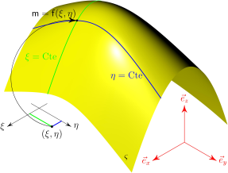
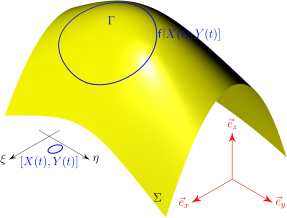
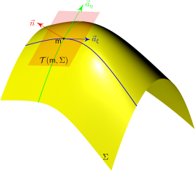

3 Courbure des surfaces
\[ \DeclareMathOperator{\asym}{\symbfsf{asym}} \newcommand{\altvec}[1]{\overrightarrow{#1}} \newcommand{\D}{{\mathrm d}} \newcommand{\dbldot}{\mathbin{\mathord{:}}} \let\div\undefined \newcommand{\div}{\operatorname{div}} \newcommand{\Div}{\operatorname{Div}} \newcommand{\external}{\mathrm{ext}} \newcommand{\Eta}{\mathrm{H}} \newcommand{\Grad}{\operatorname{Grad}} \newcommand{\grad}{\operatorname{grad}} \newcommand{\tgrad}{\operatorname{\symbfsf{grad}}} \newcommand{\tGrad}{\operatorname{\symbfsf{Grad}}} \newcommand{\internal}{\mathrm{int}} \newcommand{\KL}{\mathrm{KL}} \newcommand{\kl}{\mathrm{kl}} \newcommand{\PI}{\symup{\pi}} \newcommand{\point}[1]{\symsf{#1}} \newcommand{\power}{\mathcal{P}} \newcommand{\reals}{\mathbb R} \newcommand{\Span}{\operatorname{Vect}} \newcommand{\sym}{\operatorname{\symbfsf{sym}}} \newcommand{\tens}[1]{\symbfsf{#1}} \newcommand{\tr}{\operatorname{tr}} \newcommand{\transpose}{\mathsf{T}} \renewcommand{\vec}[1]{\symbf{#1}} \]
Dans ce chapitre, on introduit les notions fondamentales suivantes : surface paramétrée, base locale naturelle, vecteur normal, tenseur identité du plan tangent, tenseur antisymétrique fondamental, tenseur de courbure. Ces notions seront utilisées dans les chapitres suivants pour construire la théorie des coques de Kirchhoff–Love.
3.1 Plans de l’espace
Les plans constituent un cas particulier de surfaces de l’espace. Ils jouent un rôle central dans la théorie des coques, puisque les déformations et contraintes généralisées sont des tenseurs du plan tangent. C’est pourquoi on consacre en introduction à la théorie des surfaces un paragraphe aux simples plans (on trouvera des compléments à ce paragraphe au § B.1). On considère donc ici un plan \(\pi \subset \reals^3\) de l’espace.
3.1.1 Normale, identité du plan tangent
On peut définir deux normales unitaires au plan \(\pi\) : on en choisit une, que l’on note \(\vec{n}\). Ce choix oriente le plan. En effet, une base orthonormée \((\vec{l}, \vec{m})\) du plan \(\pi\) sera dite directe si la base \((\vec{l}, \vec{m}, \vec{n})\) est elle-même une base orthonormée directe de l’espace. Le tenseur \(\tens{a} = \tens{I} - \vec{n} \otimes \vec{n}\) définit alors l’opérateur de projection orthogonale sur le plan \(\pi\). C’est un tenseur d’ordre deux, symétrique.
Un tenseur \(\tens{T}\) d’ordre quelconque est dit tenseur du plan \(\pi\) si toutes ses composantes sont dans le plan \(\pi\). Le tenseur \(\tens{a}\) défini ci-dessus est bien un tenseur du plan \(\pi\), puisque \(\tens{a} \cdot \vec{n} = \vec{n} \cdot \tens{a} = \vec{0}\). De plus, on a \(\tens{a} \cdot \vec{v} = \vec{v}\) pour tout \(\vec{v} \in \pi\) : le tenseur \(\tens{a}\) sera appelé dans ce cours identité du plan tangent.
3.1.2 Tenseur antisymétrique fondamental
On introduit maintenant le tenseur antisymétrique fondamental \(\tens{e}\), très utile pour calculer des produits vectoriels dans le plan \(\pi\). On observe tout d’abord que l’application linéaire \(\vec{v} \mapsto \vec{v} \times \vec{n}\) est un endomorphisme de l’espace. Soit \(\tens{e}\) le tenseur associé, défini par la relation \[ \tens{e} \cdot \vec{v} = \vec{v} \times \vec{n} \quad \text{pour tout } \vec{v} \in \reals^3. \tag{3.1}\]
Le tenseur \(\tens{e}\) ainsi défini est un tenseur du plan, antisymétrique \[ \tens{e} \cdot \vec{n} = \vec{n} \cdot \tens{e} = \vec{0}, \quad \tens{e}^\transpose = -\tens{e} \quad \text{et} \quad \tens{e} \cdot \tens{e} = -\tens{a}. \].
On considère tout d’abord deux vecteurs quelconques de l’espace \(\vec{v}, \vec{w} \in \reals^3\) \[ \vec{u} \cdot \bigl( \tens{e} \cdot \vec{v} \bigr) = \vec{u} \cdot \bigl( \vec{v} \times \vec{n} \bigr) = - \vec{v} \cdot \bigl( \vec{u} \times \vec{n} \bigr) = - \bigl( \tens{e} \cdot \vec{u} \bigr) \cdot \vec{v}, \] et \(\tens{e}\) est donc bien un tenseur antisymétrique. On montre ensuite qu’il s’agit d’un tenseur du plan \(\pi\). Par définition [voir Éq. (3.1)] \[ \tens{e} \cdot \vec{n} = \vec{n} \times \vec{n} = \vec{0}, \] puis, en utilisant la propriété d’antisymétrie démontrée ci-dessus \[ \vec{n} \cdot \tens{e} = \tens{e}^\transpose \cdot \vec{n} = -\tens{e} \cdot \vec{n} = \vec{0}, \] ce qui montre que \(\tens{e}\) est bien un tenseur du plan \(\pi\). Enfin, la propriété \(\tens{e} \cdot \tens{e} = -\tens{a}\) résulte de la formule du double produit vectoriel. Pour prouver cette formule, on considère tout d’abord un vecteur \(\vec{v}\) du plan \(\pi\) (\(\vec{v} \cdot \vec{n} = \vec{0}\)). Alors \[ \bigl( \tens{e} \cdot \tens{e} \bigr) \cdot \vec{v} = \tens{e} \cdot \bigl( \tens{e} \cdot \vec{v} \bigr) = \bigl( \vec{v} \times \vec{n} \bigr) \times \vec{n} = \bigl( \vec{v} \cdot \vec{n} \bigl) \, \vec{n} - \bigl( \vec{n} \cdot \vec{n} \bigr) \, \vec{v} = -\vec{v}. \]
Comme par ailleurs, \(\bigl( \tens{e} \cdot \tens{e} \bigr) \cdot \vec{n} = \vec{0}\), on en déduit bien la relation annoncée pour tout vecteur de l’espace.
Dans une base orthonormée directe \((\vec{e}_1, \vec{e}_2)\) du plan \(\pi\), les composantes \(e_{\alpha\beta}\) du tenseur antisymétrique fondamental sont \[ e_{\alpha\beta} = \vec{e}_\alpha \cdot \tens{e} \cdot \vec{e}_\beta = \vec{e}_\alpha \cdot \bigl( \vec{e}_\beta \times \vec{n} \bigr) = \vec{n} \cdot \bigl( \vec{e}_\alpha \times \vec{e}_\beta \bigr), \quad\text{soit}\quad e_{\alpha\beta}=\begin{bmatrix}0&1\\-1&0\end{bmatrix}. \]
En conséquence, pour tout tenseur \(\tens{T}\) d’ordre 2 du plan \(\pi\), \(\tens{T} \dbldot \tens{e} = T_{\alpha\beta} \, e_{\alpha\beta} = T_{12} - T_{21}\), soit \[ \asym\tens{T} =\tfrac12 \bigl( \tens{T} - \tens{T}^\transpose \bigr) = \tfrac12 \bigl( \tens{T} \dbldot \tens{e} \bigr) \, \tens{e}, \tag{3.2}\] d’où l’on déduit en particulier que \(\tens{T}\) est symétrique si, et seulement si \(\tens{T} \dbldot \tens{e} = 0\). Inversement, si \(\tens{T}\) est antisymétrique, il coïncide avec sa partie antisymétrique, et l’équation (3.2) montre que \(\tens{T}\) est proportionnel à \(\tens{e}\).
Finalement, la formule suivante est valable pour tous vecteurs \(\vec{v}\) et \(\vec{w}\) de l’espace \[ \vec{v} \times \vec{w} = \bigl( \vec{v} \cdot \tens{e} \cdot \vec{w} \bigr) \vec{n} + \bigl( \vec{w} \cdot \vec{n} \bigr) \, \bigl( \tens{e} \cdot \vec{v} \bigr) - \bigl( \vec{v} \cdot \vec{n} \bigr) \, \bigl(\tens{e}\cdot\vec{w}\bigr). \tag{3.3}\]
On considère tout d’abord deux vecteurs \(\vec{v}\) et \(\vec{w}\) du plan \(\pi\) ; leur produit vectoriel est perpendiculaire à \(\pi\). En d’autres termes, \(\vec{v}\times\vec{w}\) est porté par la normale \(\vec{n}\), donc \[ \vec{v} \times \vec{w} = \bigl[ \vec{n} \cdot \bigl( \vec{v} \times \vec{w} \bigr) \bigr] \vec{n} = \bigl[ \vec{v} \cdot \bigl( \vec{w} \times \vec{n} \bigr) \bigr] \vec{n} = \bigl[ \vec{v} \cdot \bigl( \tens{e} \cdot \vec{w} \bigr) \bigr] \vec{n} = \bigl( \vec{v} \cdot \tens{e} \cdot \vec{w} \bigr) \vec{n}. \]
La relation générale (3.3) est alors obtenue en écrivant les vecteurs quelconques \(\vec{v}\) et \(\vec{w}\) comme la somme de leurs composantes dans le plan et hors-plan \[ \vec{v} = \tens{a} \cdot \vec{v} + \bigl( \vec{v} \cdot \vec{n} \bigr) \, \vec{n} \quad \text{et} \quad \vec{w} = \tens{a} \cdot \vec{w} + \bigl( \vec{w} \cdot \vec{n} \bigr) \, \vec{n}. \]
3.2 Surfaces paramétrées
3.2.1 Définition
Une surface paramétrée \(\Sigma\) de l’espace \(\reals^3\) est l’ensemble des points \(\point{m} = \point{f}(\xi, \eta)\) de \(\reals^3\) images par l’application \(\point{f} \colon \mathcal D \longrightarrow \reals^3\) \[ \Sigma = \bigl\{ \point{m} \in \reals^d | \exists (\xi, \eta) \in \mathcal D: \point{m} = \point{f}(\xi, \eta) \bigr\}. \] (voir figure Figure 3.1).
Dans la définition ci-dessus, \(\mathcal{D} \subset \reals^2\) est un ouvert de l’espace des paramètres \(\xi\) et \(\eta\). On supposera dans ce qui suit l’application \(\point{f}\) suffisamment régulière pour que toutes les relations faisant intervenir \(\point{f}\) et ses dérivées partielles aient un sens.

Cylindre, cône, sphère. Bien préciser les paramètres et leur domaine de définition.
3.2.2 Courbes tracées sur une surface
Une courbe de l’espace est généralement définie par un paramétrage \(t \in ]a, b[ \mapsto \point{g}(t)\) (voir Annexe A). L’intervalle \(]a, b[\) étant ici fixé, on se donne deux applications \(X, Y \colon ]a, b[ \longrightarrow \reals\), telles que \[ [X(t), Y(t)] \in \mathcal{D} \quad \text{pour tout }t \in ]a, b[. \]
Le paramétrage \(t \mapsto \point{g}(t)\) suivant définit alors une courbe \(\Gamma\) de l’espace (voir Figure 3.2) \[ \point{g}(t) = \point{f}[X(t), Y(t)]. \]
Pour tout \(t \in ]a, b[\), le point \(\point{g}(t)\) est par construction contenu dans la surface \(\Sigma\). On dit que la courbe \(\Gamma\) est tracée sur la surface \(\Sigma\).

3.2.3 Plan tangent
La notion de plan tangent est essentielle en théorie des coques, puisque la plupart des objets tensoriels que nous considèrerons vivent dans le plan tangent à la configuration initiale ou actuelle. Le plan tangent est défini comme le plan engendré par l’ensemble des vecteurs tangents à la surface en un point donné de celle-ci. On voit qu’il faut donc d’abord définir la notion de vecteur tangent.
Soient \(\point{m} = \point{f}(\xi, \eta)\) un point de la surface \(\Sigma\) et \(\vec{v} \in \reals^3\) un vecteur. On dit que le vecteur \(\vec{v}\) est tangent à la surface \(\Sigma\) au point \(\point{m}\) s’il existe une courbe \(\Gamma\) tracée sur \(\Sigma\) et passant par \(\point{m}\), telle que \(\vec{v}\) soit tangent à la courbe \(\Gamma\) au point \(\point{m}\). On peut alors montrer que l’ensemble \(\mathcal T(\point{m}, \Sigma)\) formé par les vecteurs tangents en \(\point{m}\) à \(\Sigma\) est le plan engendré par les vecteurs \(\vec{a}_\xi\) et \(\vec{a}_\eta\) suivants (voir Figure 3.3) \[ \vec{a}_\xi(\xi, \eta) = \partial_\xi \point{f}(\xi, \eta) \quad \text{et} \quad \vec{a}_\eta(\xi, \eta) = \partial_\eta \point{f}(\xi, \eta). \]

Soit \(\vec{v} \in \mathcal T(\point{m}, \Sigma)\) l’un de ces vecteurs. Alors par définition, il existe \(a < b\) et \(X, Y \colon [a, b] \longrightarrow \reals\) tels que le vecteur \(\vec{v}\) soit tangent au point \(\point{m}\) à la courbe \(\Gamma\), définie par le paramétrage \(t \mapsto \point{g}(t) = \point{f}[X(t), Y(t)]\). Quitte à changer de paramètre \(t\), on peut toujours supposer que \(a = -\epsilon < 0\), \(b = \epsilon > 0\) et que \(\Gamma\) passe par \(\point{m}\) en \(t = 0\) \[ X(0) = \xi, \quad Y(0) = \eta \quad \text{et} \quad \point{g}(0) = \point{f}(\xi, \eta) = \point{m}. \]
La direction tangente à \(\Gamma\) en \(\point{m}\) est alors donnée par \(\dot{\point{g}}(0)\), soit en utilisant la règle de dérivation des fonctions composées \[ \begin{aligned} \dot{\point{g}}(0) &= \dot{X}(0) \, \partial_\xi\point{f}[X(0), Y(0)] + \dot{Y}(0) \, \partial_\eta\point{f}[X(0), Y(0)]\\ &= \dot{X}(0) \, \partial_\xi\point{f}(\xi, \eta) + \dot{Y}(0) \, \partial_\eta\point{f}(\xi, \eta). \end{aligned} \]
Puisque \(\vec{v}\) est tangent à \(\Gamma\) en \(\point{m}\), il est proportionnel au vecteur précédent et on a montré que tout vecteur tangent en \(\point{m}\) à \(\Sigma\) est une combinaison linéaire des vecteurs \(\vec{a}_\xi\) et \(\vec{a}_\eta\) : \(\mathcal T(\point{m}, \Sigma) \subset \Span(\vec{a}_\xi, \vec{a}_\eta)\).
Inversement, soit \(\vec{v} = \lambda \, \vec{a}_\xi + \mu \, \vec{a}_\eta\) une combinaison linéaire de ces deux vecteurs. On définit alors \([X(t), Y(t)] = (\xi + t \, \lambda, \eta + t \, \lambda)\). Le domaine \(\mathcal{D}\) étant ouvert, on peut trouver \(\epsilon > 0\) tel que \([X(t), Y(t)] \in \mathcal D\) pour tout \(t \in ]-\epsilon, \epsilon[\). En d’autres termes, \(X\) et \(Y\) permettent définissent une courbe tracée sur \(\Gamma\), passant par \(\point{m} = \point{f}(\xi, \eta)\) en \(t = 0\). De plus, la direction tangente à \(\Gamma\) en \(\point{m}\) est \[ \dot{g}(0) = \lambda \, \vec{a}_\xi + \mu \, \vec{a}_\eta = \vec{v}. \]
On a donc tracé sur \(\Sigma\) une courbe \(\Gamma\) telle que \(\vec{v}\) soit tangent à \(\Gamma\) en \(\point{m}\) : \(\vec{v}\) est bien tangent à \(\Sigma\) et toute combinaison linéaire de \(\vec{a}_\xi\) et \(\vec{a}_\eta\) est un vecteur tangent en \(\point{m}\) à \(\Sigma\) : \(\Span(\vec{a}_\xi, \vec{a}_\eta) \subset \mathcal T(\point{m}, \Sigma)\). CQFD.
Le point \(\point{m}\) est un point régulier de \(\Sigma\) si ces deux vecteurs sont linéairement indépendants (\(\vec{a}_\xi \times \vec{a}_\eta = \vec{0}\)). Dans ce cas, \(\mathcal T(\point{m}, \Sigma)\) est le plan tangent à \(\Sigma\) en \(\point{m}\) et \((\vec{a}_\xi, \vec{a}_\eta)\) forment la base locale naturelle associée au paramétrage \((\xi, \eta) \mapsto \point{f}(\xi, \eta)\).
Si ces deux vecteurs sont colinéaires (\(\vec{a}_\xi \times \vec{a}_\eta = \vec{0}\)), le point \(\point{m}\) est un point singulier. Le plan tangent n’existe pas en un tel point.
On peut montrer que le plan tangent ainsi mis en évidence ne dépend pas du choix du paramétrage : il est intrinsèque. L’écriture \(\mathcal T(\point{m}, \Sigma)\) [plutôt que \(\mathcal T(\xi, \eta, \Sigma)\)] est donc légitime.
3.2.4 Vecteur normal
En un point \(\point{m} = \point{f}(\xi, \eta)\) régulier de la surface \(\Sigma\), le vecteur \(\vec{a}_\xi \times \vec{a}_\eta\) est perpendiculaire au plan tangent \(\mathcal{T}(\point{m}, \Sigma)\) (voir Figure 3.3). On définit la normale unitaire à \(\Sigma\) de la façon suivante \[ \vec{n}(\xi, \eta) = \frac{\vec{a}_\xi(\xi, \eta) \times \vec{a}_\eta(\xi, \eta)}{\lVert \vec{a}_\xi(\xi, \eta) \times \vec{a}_\eta(\xi, \eta) \rVert}, \tag{3.4}\] où le dénominateur n’est pas nul puisque le point \(\point{m}\) est régulier.
La normale \(\vec{n}\) oriente localement la surface puisqu’elle oriente son plan tangent \(\mathcal T(\point{m}, \Sigma)\) (au sens du § 3.1.1). Cette orientation est néanmoins arbitraire. En effet, permuter l’ordre de \(\xi\) et \(\eta\) aurait conduit à une inversion du sens de \(\vec{n}\) et donc de l’orientation du plan tangent.
Puisque le plan tangent est une caractéristique intrinsèque de la surface, la direction normale l’est également. Bien que le vecteur normal \(\vec{n}\) apparaisse dans l’éq. (3.4) comme une fonction de \(\xi\) et \(\eta\), on préfèrera dans ce qui suit la notation \(\vec{n}(\point{m})\).
3.2.5 Extension aux surfaces des notions introduites au § 3.1
À chaque point \(\point{m}\) de la surface est associé un unique plan tangent, \(\mathcal{T}(\point{m}, \Sigma)\). Dans ce plan, on peut définir, comme au § 3.1, l’identité du plan tangent \(\tens{a}\) et le tenseur antisymétrique fondamental \(\tens{e}\). Ces deux tenseurs sont des champs (ils dépendent du point d’observation \(\point{m}\) sur la surface \(\Sigma\)) intrinsèques (ils ne dépendent pas du choix de la représentation paramétrique de cette surface)
\[ \tens{a}(\point{m}) = \tens{I} - \vec{n} \otimes \vec{n} \quad \text{et} \quad \tens{e}(\point{m}) \cdot \vec{v} = \vec{v} \times \vec{n}(\point{m}) \quad \text{pour tout } \vec{v} \in \reals^3. \]
Ces champs de tenseurs ont bien sûr les mêmes propriétés que leurs homologues introduits sur un plan fixe.
3.2.6 Représentation cartésienne locale d’une surface
Soit \(\point{m} \in \Sigma\) un point régulier de la surface \(\Sigma\) et \((\vec{e}_x, \vec{e}_y)\) une base orthonormée de son plan tangent \(\mathcal{T}(\point{m}, \Sigma)\). En posant \(\vec{e}_z = \vec{n}(\point{m})\), on construit ainsi un repère cartésien orthonormé de l’espace \((\point{m}, \vec{e}_x, \vec{e}_y, \vec{e}_z)\). Dans ce repère, il existe une fonction \(g(x, y)\), définie et dérivable au voisinage de l’origine \(\point{m} (\)x = 0$, \(y = 0\)), telle que l’équation cartésienne de la surface \(\Sigma\) s’écrive, au voisinage de \(\point{m}\) \[ z = g(x, y) \quad \text{avec} \quad g(0, 0) = 0 \quad \text{et} \quad \partial_xg(0, 0) = \partial_yg(0, 0) = 0. \]
Soit \((\xi, \eta) \mapsto \point{f}(\xi, \eta)\) un paramétrage de la surface \(\Sigma\). On peut toujours supposer que \(\point{m} = \point{f}(0, 0)\). Soient \(\varphi_x\) et \(\varphi_y\) les fonctions définies de la façon suivante \[ \varphi_x(\xi, \eta) = \vec{e}_x \cdot \tens{a}(\point{m}) \cdot \altvec{\point{mm}'} \quad \text{et} \quad \varphi_y(\xi, \eta) = \vec{e}_y \cdot \tens{a}(\point{m}) \cdot \altvec{\point{mm}'} \] où \(\point{m'} = \point{f}(\xi, \eta)\) désigne un point voisin de \(\point{m}\) sur la surface \(\Sigma\) et \(\tens{a}\) est l’identité du plan tangent en \(\point{m}\). La base \((\vec{e}_x, \vec{e}_y, \vec{e}_z)\) étant orthonormée, on remarque que \[ \tens{a} = \tens{I} - \vec{n} \otimes \vec{n} = \vec{e}_x \otimes \vec{e}_x + \vec{e}_y \otimes \vec{e}_y + \vec{e}_z \otimes \vec{e}_z - \vec{n} \otimes \vec{n} = \vec{e}_x \otimes \vec{e}_x + \vec{e}_y \otimes \vec{e}_y, \] puisque \(\vec{e}_z = \vec{n}\) par construction. On définit alors la fonction \(\varphi\) \[ \varphi(\xi, \eta) = \bigl[\varphi_x(\xi, \eta), \varphi_y(\xi, \eta)\bigr], \] qui extrait les coordonnées dans le repère \((\point m, \vec e_x, \vec e_y)\) de la projection orthogonale du point courant \(\point{m}'=\point{f}(\xi, \eta)\) sur le plan tangent \(\mathcal{T}(\point{m}, \Sigma)\). Le jacobien de \(\varphi\) vaut \[ \begin{vmatrix} \vec{e}_x \cdot \tens{a} \cdot \vec{a}_{\xi}(\xi, \eta) & \vec{e}_x \cdot \tens{a} \cdot \vec{a}_{\eta}(\xi, \eta)\\ \vec{e}_y \cdot \tens{a} \cdot \vec{a}_{\xi}(\xi, \eta) & \vec{e}_y \cdot \tens{a} \cdot \vec{a}_{\eta}(\xi, \eta) \end{vmatrix} = \vec{e}_z \cdot \bigl[ \bigl( \tens{a} \cdot \vec{a}_\xi(\xi, \eta) \bigr) \times \bigl( \tens{a} \cdot \vec{a}_\eta(\xi, \eta) \bigr) \bigr] \]
En \((\xi, \eta)=(0, 0)\), on a \(\tens{a} \cdot \vec{a}_\xi(0, 0) = \vec{a}_\xi(0, 0)\) et \(\tens{a} \cdot \vec{a}_\eta(0, 0) = \vec{a}_\eta(0, 0)\). Le jacobien vaut donc \(\lVert \vec{a}_\xi(0, 0) \times \vec{a}_\eta(0, 0) \rVert\), qui est non-nul puisque \(\point{m}\) est un point régulier. La différentielle de \(\varphi\) est donc inversible en \((0, 0)\). Le théorème d’inversion locale garantit alors qu’on peut inverser localement au voisinage de \((\xi = 0, \eta = 0)\) la fonction \(\varphi\). Soit \(\psi\) son inverse ; on a alors, pour tous \((x, y)\) suffisamment petits : \(\varphi[\psi(x, y)] = (x, y)\). En d’autres termes \[ \tens{a} \cdot \altvec{\point{mm}'} = x \, \vec{e}_x + y \, \vec{e}_y, \quad \text{avec} \quad \point m' = \point{f}[\psi(x, y)]. \]
On définit alors la fonction \(g(x, y)\) \[ g(x, y) = \vec{e}_z \cdot \altvec{\point{mm}'}, \quad \text{avec} \quad \point{m}'= \point{f}[\psi(x, y)]. \]
Comme \(\tens{a}+\vec{e}_z\otimes\vec{e}_z=\tens I\), on obtient \[ \altvec{\point{mm}'} = x \, \vec{e}_x + y \, \vec{e}_y + g(x, y) \, \vec{e}_z, \] pour tout point \(\point{m}'\) de \(\Sigma\), suffisamment proche de \(\point{m}\). On a donc bien construit localement une représentation cartésienne de la surface \(\Sigma\). Bien sûr, lorsque \(x = y = 0\), le point \(\point{m}'\) coïncide avec \(\point{m}\), donc \(g(0, 0) = 0\). Par ailleurs, puisque le plan tangent en \(\point{m}\) à \(\Sigma\) est le plan \((\point{m}, \vec{e}_x, \vec{e}_y)\), on a également \(\partial_xg(0, 0) = \partial_yg(0, 0)=0\). Pour le voir, il suffit d’observer que l’on peut considérer les coordonnées \((x, y)\) comme un paramétrage de la surface \(\Sigma\). Ainsi, \(\point{g}(x, y)\) est un point de \(\Sigma\) pour tous \(x, y\) suffisamment petits, en posant \[ \point{g}(x, y)=\point{m} + x \, \vec{e}_x + y \, \vec{e}_y + g(x, y) \, \vec{e}_z. \]
La base locale naturelle associée est \[ \vec{a}_x(x, y) = \vec{e}_x + \partial_xg(x, y) \, \vec{e}_z \quad \text{et} \quad \vec{a}_y(x, y) = \vec{e}_y + \partial_yg(x, y) \, \vec{e}_z. \]
Les vecteurs \(\vec{a}_x(0, 0)\) et \(\vec{a}_y(0, 0)\) sont tangents à \(\Sigma\) en \(\point{m}\) : ils sont donc contenus dans le plan tangent en \(\point{m}\), et leur composante selon \(\vec{e}_z\) est nulle.
3.3 Courbure des surfaces
3.3.1 Tenseur de courbure
Soient \(\point{m}\) un point régulier d’une surface \(\Sigma\) et \(\vec{t}\) un vecteur unitaire, tangent à \(\Sigma\) en \(\point{m}\). Le point \(\point{m}\) et les vecteurs \(\vec{t}\) et \(\vec{n}(\point{m})\) définissent un plan \(\Pi\) qui rencontre la surface \(\Sigma\) le long de la courbe \(\Gamma\) (voir Figure 3.4). Cette courbe est une courbe plane, puisqu’elle est par construction contenue dans le plan \(\Pi\). Sa courbure en \(\point{m}\) est donc une notion connue (voir § A.2).

Si la surface \(\Sigma\) est suffisamment régulière en \(\point{m}\), alors on il existe un tenseur \(\tens{b}(\point{m})\) tel que la courbure de \(\Gamma\) au point \(\point{m}\) soit donnée par l’expression : \(\vec{t} \cdot \tens{b}(\point{m}) \cdot \vec{t}\). Le tenseur \(\tens{b}(\point{m})\) ainsi introduit est le tenseur de courbure de la surface \(\Sigma\) au point \(\point{m}\). C’est un tenseur du plan tangent en \(\point{m}\), symétrique.
Pour établir l’existence du tenseur \(\tens{b}\) au point \(\point{m} \in \Sigma\), on considère une représentation cartésienne locale \((x, y) \mapsto g(x, y)\) de la surface au voisinage de \(\point{m}\). Ainsi tout point \(\point{m}'\) suffisamment proche de \(\point{m}\) sur \(\Sigma\) s’écrit \[ \point{m}' = \point{m} + x \, \vec{e}_x + y \, \vec{e}_y + g(x, y) \, \vec{e}_z \in \Sigma, \] où \((\vec{e}_x, \vec{e}_y)\) désigne une base orthonormée du plan tangent \(\mathcal{T}(\point{m}, \Sigma)\) et \(\vec{e}_z = \vec{n}\). Tout point \(\point{m}'\) du plan \(\Pi\) peut par ailleurs s’écrire \[ \point{m}' = \point{m} + r \, \vec{t} + z \, \vec{e}_z = \point{m} + r \, t_x \, \vec{e}_x + r \, t_y \, \vec{e}_y + z \, \vec{e}_z \in \Pi. \] Un point \(\point{m}'\) de la courbe \(\Gamma\) doit safisfaire simultanément les représentations précédentes. On en déduit la représentation paramétrique de \(\Gamma\) au voisinage de \(\point{M}\) \[ x = r \, t_x, \quad y = r \, t_y \quad \text{et} z = g(r \, t_x, r \, t_y), \] où le (petit) paramètre est \(r\). Les dérivées premières de \(g\) étant nulles, on obtient à l’ordre le plus bas en r \[ z = g(r \, t_x, r \, t_y) = \frac{r^2}{2} \, \bigl[ t_x^2 \, \partial_{xx}^2 g(0, 0) +2t_x \, t_y \, \partial_{xy}^2g(0, 0) + t_y^2 \, \partial_{yy}^2g(0, 0) \bigr] + o\bigl( r^2 \bigr). \tag{3.5}\]
Soit \(\tens{b}\) la hessienne de \(g\) à l’origine \[ \tens{b} = \partial_{\alpha\beta}^2 g(0, 0) \, \vec{e}_\alpha \otimes \vec{e}_\beta. \]
Le tenseur \(\tens{b}\) ainsi défini est un tenseur du plan tangent \(\mathcal{T}(\point{m}, \Sigma)\), symétrique. De plus, l’équation (3.5) se met sous la forme \[ z = \frac{r^2}{2} \, \vec{t} \cdot \tens{b} \cdot \vec{t} + o\bigl( r^2 \bigr). \]
On reconnaît, dans la base cartésienne \((\vec{t}, \vec{e}_z)\) du plan \(\Pi\), l’équation d’une parabole et le terme en \(r^2 / 2\) correspond à la courbure au sommet de cette parabole (soit, au point \(\point{m}\)). On a donc bien mis la courbure de \(\Gamma\) en \(\point{m}\) sous la forme \(\vec{t} \cdot \tens{b} \cdot \vec{t}\), où \(\tens{b}\) est la hessienne de \(g\) à l’origine.
Le tenseur de courbure \(\tens{b}\) a été construit ici dans un système de coordonnées curviligne très particulier. Pour conclure cette démonstration, il faut montrer que ce tenseur est bien intrinsèque, c’est-à-dire indépendant de la représentation paramétrique de \(\Sigma\). C’est en fait immédiat, puisque \(\tens{b}\) relie le vecteur unitaire du plan tangent \(\vec{t}\) à la courbure \(\vec{t} \cdot \tens{b} \cdot \vec{t}\) d’une courbe plane, ces objets étant eux-mêmes définis de façon intrinsèque. On écrira donc \(\tens{b}(\point{m})\) et pas \(\tens{b}(\xi, \eta)\) pour désigner le tenseur de courbure au point \(\point{m}\) de \(\Sigma=\).
3.3.2 Courbures principales et classification des points réguliers
Le tenseur de courbure \(\tens{b}\) étant symétrique, il est diagonalisable dans une base orthonormée du plan tangent \(\mathcal{T}(\point{m}, \Sigma)\) et on peut introduire les courbures principales \(b_{\mathrm{I}}\) et \(b_{\mathrm{II}}\), qui sont les valeurs propres de ce tenseur. On conviendra d’ordonner ces valeurs propres de façon à ce que \(b_{\mathrm{I}} \leq b_{\mathrm{II}}\). Les courbures principales sont les valeurs extrêmes de la courbure en \(\point{m}\) de la courbe plane \(\Gamma\) introduite ci-dessus.
Pour montrer ce résultat, on introduit les directions principales de courbure \(\vec{t}_{\mathrm{I}}\) et \(\vec{t}_{\mathrm{II}}\) (vecteurs unitaires orthogonaux), de sorte que \[ \tens{b} = b_{\mathrm{I}} \, \vec{t}_{\mathrm{I}} \otimes \vec{t}_{\mathrm{I}} + b_{\mathrm{II}} \, \vec{t}_{\mathrm{II}} \otimes \vec{t}_{\mathrm{II}}. \]
Les vecteurs \(\vec{t}_{\mathrm{I}}\) et \(\vec{t}_{\mathrm{II}}\) forment une base orthonormée, dans laquelle on peut décomposer le vecteur \(\vec{t}\) : \(\vec{t} = \cos \theta \, \vec{t}_{\mathrm{I}} + \sin \theta \, \vec{t}_{\mathrm{II}}\). La courbure de \(\Gamma\) en \(\point{m}\) a donc pour expression \[ \vec{t} \cdot \tens{b} \cdot \vec{t} = \cos^2 \theta \, b_{\mathrm{I}} + \sin^2 \theta \, b_{\mathrm{II}}, \] dont les valeurs extrêmes sont bien obtenues pour \(\theta=0\) (\(\vec{t} = \vec{t}_{\mathrm{I}}\)) ou \(\theta = \pi/2\) (\(\vec{t} = \vec{t}_{\mathrm{II}}\)).
Comme pour une courbe plane, le signe des courbures principales dépend de l’orientation de \(\Sigma\) (de la normale \(\vec{n}\)). Les produits \(b_{\mathrm{I}} \, \vec{n}\) et \(b_{\mathrm{II}} \, \vec{n}\) sont quant à eux intrinsèques indiquent de quel côté la surface oriente sa courbure. En effet les deux centres de courbure associés aux courbures principales sont situé en \(\point{m} + \vec{n} / b_{\mathrm{I}}\) et \(\point{m} + \vec{n} / b_{\mathrm{II}}\).
Sphère, cylindre.
On peut introduire une classification des points réguliers \(\point{m}\) d’une surface en fonction des signes des courbures principales \(b_{\mathrm{I}}\) et \(b_{\mathrm{II}}\).
- Si \(b_{\mathrm{I}} \, b_{\mathrm{II}} > 0\) (courbures principales non-nulles et de même signe), le point \(\point{m}\) est dit elliptique.
- Si \(b_{\mathrm{I}} \, b_{\mathrm{II}} < 0\) (courbures principales non-nulles et de signes contraires), le point \(\point{m}\) est dit hyperbolique.
- Si l’une seulement des deux courbures principales est nulle, le point \(\point{m}\) est parabolique.
- Si les deux courbures principales sont nulles, le point \(\point{m}\) est un méplat.
- Si les deux courbures principales sont égales et non-nulles, le tenseur de courbure est diagonal et la courbure de la courbe \(\Gamma\) est indépendante du vecteur \(\vec{t}\) ; le point \(\point{m}\) est un point ombilic.
3.3.3 Courbure moyenne, courbure gaussienne
Le tenseur de courbure \(\tens b\) est un tenseur du plan tangent \(\mathcal{T}(\point{m}, \Sigma)\) : il peut donc être considéré comme le représentant d’un endomorphisme de \(\mathcal{T}(\point{m}, \Sigma)\) (espace vectoriel de dimension 2). On peut alors calculer les invariants de \(\tens{b}\), soit \(\tr\tens{b} = \tens{b} \dbldot \tens{a}\) et \(\det \tens{b}\).
Ces invariants permettent de définir la courbure moyenne \(h\) et la courbure gaussienne \(k\)
\[ h = \tfrac{1}{2} \tr \tens{b} = \tfrac{1}{2} \, \bigl( b_{\mathrm{I}} + b_{\mathrm{II}} \bigr) \quad \text{et} \quad k = \det{\tens{b}} = b_{\mathrm{I}} \, {b_\mathrm{II}}. \]
Le point \(\point{m}\) de la surface \(\Sigma\) est elliptique, parabolique ou hyperbolique si la courbure gaussienne est positive, nulle ou négative, respectivement. Par ailleurs, le théorème de Cayley–Hamilton permet d’écrire que \(\tens{b}\) annule son polyôme caractéristique \[ \tens{b} \cdot \tens{b} - 2h \, \tens{b} + k \, \tens{a} = \tens{0}. \]